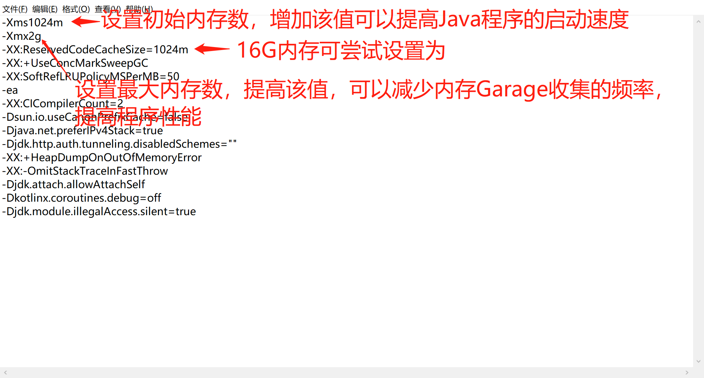

IntelliJ IDEA
IDEA 全称 IntelliJ IDEA，是java编程语言开发的集成环境。IntelliJ在业界被公认为最好的java开发工具，尤其在智能代码助手、代码自动提示、重构、J2EE支持、各类版本工具(git、svn等)、JUnit、CVS整合、代码分析、 创新的GUI设计等方面的功能可以说是超常的。
IDEA是JetBrains公司的产品，这家公司总部位于捷克共和国的首都布拉格，开发人员以严谨著称的东欧程序员为主。
Idea安装配置
1. 下载Idea:
2. 安装目录下的bin里面C:\JetBrains\IntelliJ IDEA 2019.2.3\bin, 找到:idea64.exe.vmoptions.16G内存的电脑可以修改配置文件提高idea的性能

IntelliJ IDEA中拉取项目配置ProjectStructure
1. 创建项目:
2. Git拉取:本项目GitLab拉取地址:http://117.156.40.138:58088/project/documentExchange/doc_web.git
3. ProjectStructure配置:
4. JDK配置:
5. lib配置:
6. Modules->Dependencies:
7. Artifacts配置:
8. Tomcat配置:
9. Tomcat乱码:
10. Idea编码设置UTF-8:file->Settings
11. 部署并启动项目:
12. 项目启动成功:

Good Luck!
诚信 · 创新 · 开放 · 合作